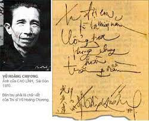

Nhất Thống Tiên Sinh
Viết xong bài “Người xưa giờ đâu?”, nằm đọc lại dưới ngọn đèn tàn không đủ sức tỏa chiếu, tôi chợt xúc động triền miên, không tự ngăn nổi, hai giòng dư lệ.
Tôi vừa nghĩ đến người con trai độc nhất của “Cậu Ba Vị Xuyên”, người mang tên Thống – mà tôi đã từng gán cho mỹ hiệu: Nhất Thống tiên sinh – cũng là một người “nghèo nhất thiên hạ”, như Cậu Ba trước kia; và ngay từ thuở còn học trường tiểu học tỉnh Nam tôi đã coi là một “vong niên tri kỷ”.
Chính bậc “vong niên tri kỷ” này đã khuyến khích tôi trên bước đường sáng tác; và ngay khi tập Thơ say của tôi được ấn hành (1940), đã tìm đến tặng tôi một chiếc quạt trên có đề thơ. Nét bút nặng trịch u hoài, quằn quại như cả một thân thế không lối thoát; nét bút ấy, tôi không lạ lùng gì cho lắm; nhưng bài thơ đề trên quạt đã khiến tôi vô cùng ngạc nhiên. Thế ra lần này Nhất Thống tiên sinh “phá cựu lệ”? Cũng hạ bút, cũng sáng tác như ai?
Nguyên ủy là tiên sinh vẫn thường tuyên bố: “Tôi là con của một danh sĩ, như thế đủ rồi. Cần chi đến tôi phải làm thơ! Mà thí dụ tôi có gắng làm đi nữa, thì thơ ấy cũng chỉ là những cái bóng mờ, những tiếng vang yếu ớt của thơ cha tôi mà thôi. Muốn gặp tiên, phải vào sâu tận cuối hang chứ! Sao lại quanh quẩn nơi dòng suối gấm, rừng hoa đào làm chi!”.
Ấy thế mà hôm nay tiên sinh lại vẽ ra cho tôi thưởng thức cả một giòng suối rừng hoa… Tôi không ngạc nhiên sao được!
Sáng tác của tiên sinh như sau:
Hành ca cổ phúc cánh xương cuồng
Không tác ngang tàng nhất túy vương.
Trần ai chân vật sắc
Thiên địa nhất không nang
Càn khôn phiếu diểu
Hồ hải thương mang.
Phong vũ chi Lưu Lang đắc cú
Đăng lâm chi Đỗ Mục tha hương.
Học cổ nhân phong lưu mộng trung chi túy hề hà thương!
°
Ngay tại trận, tôi đã có bài “dịch nguyên điệu” và đúng cả số câu số chữ, như sau:
Hát ngao vỗ bụng khoái cơn cuồng,
Làm cái “Không-làm”… Một túy vương!
Đất trời kia: túi rỗng!
Cát bụi này: kim cương!
Trước sau mù mịt
Rừng biển đầm hang…
Mưa gió chàng Lưu thơ lất phất
Quê người Đỗ mục rượu lang thang.
Học cổ nhân có hề chi mà!... dòng Say ta đi hoang.
°
Cộng tất cả năm mươi tám chữ, chia làm chín câu. Bài dịch này, Nhất Thống tiên sinh khen là có “phong cốt” lắm. Nhưng ngâm đi ngâm lại hàng chục lượt, qua đến mấy tuần trà và mấy phen ngồi dậy khêu đèn sửa bấc, tiên sinh bỗng cười lớn, vung tay:
“Đã thế, tội gì anh tôn trọng nguyên điệu! Cứ phóng bút rồi nó muốn ra điệu gì thì ra, mấy câu thì mấy chứ, cần gì nào!”.
Tôi chịu quá. Nhưng “hứng bất khả ép”, đành để dịp khác thôi. Kẻo rồi lại đường cùng, phải khóc mà quay về như Nguyễn Tịch, thì mất cả thú!...
Cái “dịp khác” này, phải 8 năm sau mới chịu lững thững lê gót đến. Mà lúc đó, giang sơn đã đổi chủ, đào kép đã thay tuồng; Nhất Thống tiên sinh và tôi đã trở thành “dân tản cư, dân chạy loạn”.
Dầu sao cũng vẫn còn chút phong độ cuối mùa: trà vẫn pha, đèn vẫn thắp, và khói thơm vẫn tỏa rộng, bất chấp ngọn lửa chiến cuộc đang bùng cháy từ Hà Nội lan ra.
Và cuối cùng thì “hứng thơ” lại nổi dậy, tôi hoàn thành bản phóng dịch bài “Hành ca cổ phúc…” như sau:
Vỗ cái trống bụng
Ta nằm ta ca.
Rằng điên cũng đúng
Rằng ngóng cũng là!
Ngang tàng giữa cõi người ta
Một Vua Say… Mấy ai mà, ngàn xưa?
Đất trời: túi rỗng.
Ngày đêm: bụi nhơ.
Ngọc vùi đáy động
Cần chi bến bờ!
Trùng lai mưa gió thành thơ
Mười năm gánh rượu say mờ cố viên…
Học theo người trước
Say thánh say hiền,
Phất phơ lan nhược
Say “tĩnh’ say “yên”.
Và say vang bóng thuyền quyên
Say luôn cả cái “hư huyền”… đã sao?
Nghe tôi đọc xong, Nhất Thống tiên sinh vỗ đùi tán thưởng:
“Ừ, đã sao? Hỏi rằng đã sao nào? Say luôn cả cái Hư huyền đi… cũng được lắm chứ!”.
Rồi đột nhiên tôi cảm thấy giọng nói giọng cười của tiên sinh có chút gì lạnh lẽo ghê rợn. Lửa trong hỏa lò đã vạc dần. Lửa trên ngọn bấc cũng nhạt nhòa tê tái, như có sương mù vây quanh.
May sao, một tiếng chuột rút phá tan bầu không khí nặng nề. Tôi cười giọng, buông một câu nửa an ủi, nửa cợt đùa:
“Ông sắp giàu rồi, lo gì! Có điềm báo trước đấy”.
Tiên sinh không trả lời, nhưng vẻ mặt đang lạnh như mồ hoang bổng đổi ra trịnh trọng, cầu khẩn:
“Anh còn trẻ, duyên nợ với thơ còn dài. Mong anh đừng quên nhau. Và cũng mong anh nhớ cho cái việc tôi nhờ anh… từ lâu lắm rồi thì phải!”.
“À… Bài thơ đó hử? Đệ không quên đâu, nhưng khó dịch quá, vận dụng chữ nghĩa không nổi? Nhất là hai câu tam tứ và câu cuối cùng”.
“Thế là tôi chẳng bao giờ được nghe chứ gì? Đáng hận thật!”
“Ơ hay! Chẳng bây giờ thì tháng sau, năm sau. Thế nào ông cũng được thưởng thức cái tài “dịch liều lĩnh bất chấp” của tôi mà!”.
“Làm gì có tháng sau, chứ đừng nói năm sau nữa! Tôi chỉ còn mấy ngày trước mặt thôi. Nhưng… cũng chả sao! Miễn đừng quên nhau là được. Và nhớ cho rằng bài thơ ấy, tôi đã chỉ đọc riêng anh nghe thôi, và anh sẽ vì tôi mà chuyển sang Quốc âm, được câu nào hay câu đó. Dầu tôi về nằm sâu dưới đất, tôi cũng vẫn lắng tai”.
“Cụ Hoàng Giáp Mai Sơn…”
“… Nguyễn Thượng Hiền”.
“Vâng, cụ Nguyễn Thượng Hiền đối với lệnh tôn thật là chí tình. Chả biết sau khi lệnh tôn đã nằm xuống, và cụ Nguyễn đã lang thang nơi hải ngoại hoạt động cho cách mạng, có lần nào cụ nhớ đến thơ, đến bạn thơ xưa, để ngâm lại bài phúng điếu lâm ly ấy không nhỉ?”.
“Điều đó tôi không biết. Nhưng có điều tôi tin chắc rằng khi cụ Nguyễn vẩy rượu quanh mồ và đọc bài thơ phúng điếu kia, thân phụ tôi nằm dưới đất đã nghe không sót một chữ… Cũng như rồi đây tôi về hầu cạnh người, tôi vẫn còn đợi bản dịch của anh”.
Tôi bàng hoàng. Và xúc động tới run rẩy. Nên không dám ngồi lâu nữa. Tưởng chừng như nói xong lời trăn trối này, Nhất Thống tiên sinh sẽ ngã gục bên ngọn đèn tàn, chẳng bao giờ tỉnh dậy.
Bài thơ Hán tự của cụ Hoàng Giáp Mai Sơn, viết từ đời Thành Thái, như sau đây:
Tiên huyết lâm ly sái chỉ hồng
Thanh sơn nan trắc hải nan cùng.
Thịnh Đường cảnh giới khai toàn Việt
Lão Đỗ môn đình kiến thử ông.
Thiên cổ hữu nhân đồng loại tửu
Tiền đồ vô lực thất truy phong.
Cánh kham hướng bích trường vi phúng
Nhiễu thất quần sồ ngữ vị công.
Và sau, tôi dịch Quốc âm, cũng gieo vần ở câu Phá:
Lệ nhỏ đầy trang máu thắm hồng
Non xanh dằng dặc biển mênh mông.
Thơ Đường cõi Việt đang vừa thịnh
Lão Đỗ thời nay chỉ có ông.
Mả lạnh đây còn hương loại tửu
Dặm trường đâu nữa sức truy phong?
Khóc ai những muốn quay vào vách
Bập bẹ đàn em mới vỡ lòng!
Lẽ dĩ nhiên tôi chỉ dịch để mà dịch, chứ còn Nhất Thống tiên sinh thì sau lần gặp ấy, có bao giờ tôi được tái ngộ nữa đâu.
Sài Gòn, 1971
Sao lại thế được?
Cách đây hai mươi năm, ngay khi vào làng văn để nhận lấy cái nghiệp dĩ của những người cầm bút, tôi đã nghe đại danh ông tú Phan Khôi, như sấm dậy vang tai. Nhưng phải đến năm Bính Tuất (1946) tôi mới có dịp cùng tiên sinh hạnh ngộ. Buổi nhất kiến thật đã như định trước bởi duyên trời.
Hôm đó, tiết cuối thu… Cái lạnh của miền Bắc đã thấm vào lòng một gã ưa thú họp bạn ngâm văn. Chịu không nổi nữa, tôi bèn lấy một chuyến xe lửa mà “giang hồ vặt” từ Nam Định lên Hà Nội. Cho được tự cởi mở tuềnh toàng theo đà cuồng hứng. Cho được sống hẳn vào nhịp sống vừa tao nhã vừa sôi nổi của đất ngàn năm văn vật, của hồ Trúc sông Hồng.
Bước xuống ga Hàng Cỏ, tôi về trụ sở Ban Kịch Đông Phương. Ở đấy, tôi được tin các văn hữu Kinh kỳ đang chào đón một số anh em từ miền Trung miền Nam mới ra. Tôi lấy làm tiếc lắm. Vì buổi họp bắt đầu những từ năm giờ chiều. Vậy mà lúc tôi đặt chân vào vỉa hè Hàng Lọng thì ba mươi sáu phố phường đã nhất tề khai đăng.
Ngồi mạn đàm với họa sĩ Hoàng Tích Chù và nữ kịch sĩ Tuyết Khanh, câu chuyện nghệ thuật chưa đi hết một tuần trà, tôi đã thấy lừng lững hiện lên từ cầu thang gác cái mũi khoằm khoằm rất cá biệt của anh bạn họ Nguyễn. Dáng điệu bí mật, anh trịnh trọng tuyên bố: “Xin lỗi toàn thể Ban Kịch, tôi có chút việc riêng, cần phải mượn tạm Vũ quân đây…”.
Cả bọn phá lên cười: “Bất phương! Bất phương! Cứ mượn dài hạn đi cũng được, ông Tuân ạ!”.
Thế là tôi cùng Nguyễn Tuân vội vã ra đường.
“Này! Ông Phan Khôi muốn gặp anh đó! Mà gặp ngay tức khắc kia! Đi chứ?”.
Rồi không đợi tôi trả lời, anh vẫy luôn một chiếc xe kéo, ra lệnh cho “cọp” lồng thẳng xuống bãi Phúc Xá, nơi “ngự trị” của tác giả bài “Nhớ rừng”.
Quả nhiên ông Phan đang có ý trông đợi! Cái phút nhìn mặt cầm tay đã hào hứng phi thường. Lần thứ nhất tôi cùng Phan Khôi hạnh ngộ.
Chiều hôm sau, thấy tôi ngỏ lời cáo biệt, tiên sinh trầm ngâm nửa khắc, rồi bảo: “Được, hai ta sẽ cũng đi”.
Tôi cười thầm tự nhủ: “Gió đã lên!”. Và, bắt chước kiểu Nguyễn “mượn tạm” tôi ở Ban Kịch Đông Phương, tôi cũng chỉnh lại áo khăn, trịnh trọng xin phép Ban Kịch Thế Lữ cho “mượn tạm” ông Tú Khôi ít bữa.
Một già một trẻ, thẳng đường về bến Vị non Côi… Và, trong căn gác xép ở bờ sông, dài như cái ống, tối như cái “hũ Xuân Thu”, tôi đã tiếp chuyện Phan tiên sinh hai ngày tròn với hai đêm trắng; toàn chuyện văn chương cả, mà quái thay, dứt không ra nữa thôi!
Nguyên do: Buổi liên hoan tại Hà Nội, kịch sĩ Hoàng Cầm được ban tổ chức đề cử ra ngâm mấy bài thơ gọi là để thắt chặt mối duyên văn nghệ Nam Bắc. Tình cờ trong số bốn bài ấy lại có một bài của tôi. Bài ca sông Dịch đó vậy! Thai nghén từ 1940, nó đã bị Ban Kịch Thế Lữ thúc đẩy bằng “đủ mọi phương tiện” để ra chào đời năm 1943, cốt mượn dùng làm khai từ cho vở kịch Kinh Kha của Vi Huyền Đắc. Rồi chuyến này, chính nó đã khiến ông Phan Khôi “thú” tác giả và nóng lòng muốn gặp mặt ngay…
Ấy là ông bảo thế! Chứ riêng phần tác giả, thì phải hiểu rằng người ta “thú” đây là “thú” cái tinh thần hào hiệp của anh chàng giết hụt Tần bạo chúa ở Hàm Dương kia!
Ồ! Hiểu cách nào thì hiểu! Mặc ý tác giả! Điều ấy bất túc luận. Nhưng can hệ là cái cử chỉ kia đã nói lên những gì về “con người của ông Phan Khôi”?
Thiết tưởng nó đã nói lên đủ lắm!
 .
.
Phan Khôi - Vũ Hoàng Chương
“Còn chưa đủ ư? Thì đây: suốt hai ngày đêm, trong cái dài dằng dặc và cái tối mò mò của “gác ống”, phố Bờ sông, Phan Khôi đã cao đàm hùng biện, hứng khởi thao thao, giọng sắc bén như chém đinh chặt sắt. Ông căm thù bạo lực, ông phản kháng độc tài, ông lên án mọi hình thức dân chủ giả hiệu. Ông có thừa phong độ cốt cách của một nho sĩ ngang tàng bất khuất, cộng thêm vào cái kiến thức sâu rộng của một tay lịch lãm giang hồ. Lắm lúc ông nói như gào như quát, sang sảng lạnh người.
“Không thể được! Sao lại thế được? Văn nghệ phải là văn nghệ! Thiếu tự do, thà ném bút đi! Cầm lấy một mũi nhọn khác!”.
Phải chăng hào khí Kinh Kha đã nhập vào con người thâm trầm quắc thước này? – Không! Tôi tin rằng lòng phẫn nộ của Phan Khôi có thể bốc lên cao hơn và mãnh liệt hơn cái oán khí cầu vồng trắng xuyên mặt trời của kẻ “một đi” trên bến Dịch.
Con người ấy! Buổi hạnh ngộ ấy! Tôi mà quên được ư? Và năm ấy, tôi còn nhớ là năm 1946! Triều Nguyễn chấm dứt vừa đúng mười ba tháng trời.
Sau đó ít lâu… Khói lửa bùng lên từ Hải Phòng, từ Hà Nội… và lan tràn khắp các thị trấn trung châu. Tôi vâng lệnh huyên đường tạm dời về miền duyên hải. Ngày dài đằng đẵng, hết xuân rồi lại thu… Lòng nhớ bè bạn làng văn càng như thiêu như đốt. Bỗng một hôm, tôi nhận được từ Thái Nguyên gửi về không phải một lá thắm buông theo giòng nước biếc, nhưng một lá thư trao theo kiểu chim xanh…
Ngoài phong bì, chỉ có hai dòng: Vũ Hoàng Chương, Nam Định. Và bên trong vẻn vẹn một bài luật thi với chữ ký: Phan Khôi.
Thật không sao kể xiết được những cảm xúc của tôi phút bây giờ! Cảm xúc đến suýt quên rằng thư này chưa chắc tôi đã là người đầu tiên mở ra đọc. Thư rằng:
Ngừng tim lặng óc bặt giòng tình
Tai mắt như không phải của mình
Thấy dưới ánh trăng muôn khúc nhạc
Nghe trong tiếng ếch một màu xanh
Suối tiên đắm đuối bao cho chán
Khối mộng vờn mơn mãi chẳng thành
Thú ấy từ lâu không có nữa.
Ngủ say thức tỉnh, dậy buồn tênh
Ôi! Câu phá đề sao nghẹn ngào u uất đến thế? Cả một giòng máu bị thắt nút đang sôi sục phá phách đòi tự do! Rất sẵn sàng vì tự do mà “lưu huyết”. Câu thừa đề mới lại mỉa mai não ruột đến đâu! Tai mắt còn “không phải của mình”, hỏi ngọn bút cầm ở tay có thể nào “của mình” được nữa chứ?
Nghe thấy màu, trông thấy nhạc, tai mắt loạn rồi ư? Mà không “loạn” sao được? “Không phải của mình” kia mà! Đến như “Suối tiên đắm đuối, khối mộng vờn mơn”, niềm khao khát tự do quả đã tuôn tràn đè trĩu khắp trang giấy.
Ồ! Hiển nhiên lắm rồi! Vì đây là hai câu kết:
Thú ấy từ lâu không có nữa…
Ngủ say thức tỉnh, dậy buồn tênh.
“Thú ấy” là thú nào? Nếu không phải cái thú tự do mà con người văn nghệ quyết tranh đấu cho kỳ được, nắm giữ lấy như tính mạng, hơn cả tính mạng có khi!
Thế mà “từ lâu…”. Trời hỡi! Niềm cảm xúc dâng cao. Tôi nằm dưới một túp lều tranh tại phủ lỵ Xuân Trường, ngâm đi ngâm lại bài thơ của Phan tiên sinh, mà cả một tâm sự đột nhiên được cởi tung mở phắt. Một tiếng xướng phải có muôn tiếng họa! Lẽ nào trong muôn tiếng họa ấy lại thiếu tiếng họa của một kẻ từng vui nhận lấy văn chương làm nghiệp dĩ hay sao?
Cho nên tôi đã họa nguyên vần bài luật thi của Phan tiên sinh và đã gửi đi tức khắc. Tính ông Phan nóng như lửa, nếu giữa khoảng tiếng xướng tiếng họa mà im lặng đến hai mươi bốn giờ, ấy là tôi đã đắc tội với bậc vong niên tri kỷ lắm rồi đó!
Bài họa vần như sau:
Trời vô tâm quá, đất vô tình…
Biết gửi vào đâu cái “chính mình”?
Tiếng ếch đã trùm lên tiếng sóng
Màu đen lại ngả xuống màu xanh.
Uổng cho thơ dẫu bày trăm trận
Ngán nhẽ sầu khôn phá một thành.
Tưởng tới nguồn Đào thôi lại tiếc!
Con thuyền đêm ấy nhẹ tênh tênh.
Thơ trao đi, lòng còn thắc mắc. Cho đến mãi giờ phút này!
Không biết hồi đó Phan tiên sinh có tiếp nhận được chăng? Mà từ đấy biệt vô âm tín…
Đại Ẩn am không
Buổi gặp đầu tiên với tác giả bài Thăng Long hành đã diễn ra không ở nơi nào khác mà ở ngay nơi “ngàn năm văn vật đất Thăng Long”; giữ vai trò liên lạc cũng chẳng phải người nào khác mà chính là người chủ trương nhà xuất bản Thăng Long. Kỳ diệu thay! Duyên hàn mặc, ai dám bảo không trên đá ba sinh ghi sẵn?
Thuở ấy… chừng như mùa thu. Và thế kỷ hai mươi vừa đứng bóng thì phải. Thật ra cái bóng ấy đã nhích đôi chút về phía bên này, nghĩa là vào khoảng 1952, 1953… chi đó! Nhưng nếu đọc tới đây, một số thân hữu của tôi có bất chợt nổi hứng vỗ án mà ngâm lại hai câu thơ:
Lưng chừng thế kỷ thứ hai mươi [1]
Khoảng giữa mùa thu đẹp tuyệt vời…
thì vẫn cứ được đi! Không ai bắt uống rượu phạt! Lầm ngày lộn tháng, sai trật khoảng mười năm trở lại, đâu có ăn nhằm gì!...
Vâng. Anh bạn Vũ Minh Thiều, giám đốc Thăng Long xuất bản cục khoảng 1952, 1953 đã hướng dẫn thi sĩ Đông Hồ đến tìm tôi, ở tận ngõ hẻm kế cận Đài Khuê Văn, giữa một vùng cỏ áy nước ao tù, phảng phất mùi ẩm mốc tỏa ra từ rừng bia Tiến sĩ. Nơi mà:
Sư biểu muôn đời nền tịch mịch
Cung tường trăm ngọn nửa hoang vu
Cương lồng chinh mã què chân hạc
Củi thổi quân lương chẻ chữ thờ
Khoa bảng bia còn hàng chữ khắc
Khuê văn gác sót bóng sao thưa… [2]
Cùng đi với thi sĩ Đông Hồ cũng có cả nữ sĩ Mộng Tuyết, đôi chim liền cánh từ vùng trời sao Dực sao Chẩn vừa bay ra đất Bắc để góp chung nguồn cảm hứng vào tâm sự của:
Bút tháp viết trời xanh chữ hận
Nghiên đài tràn mực đậm màu thu.
Buổi gặp ở “Giám Hồ hồ biên” chỉ ngắn ngủi trong vòng một khắc; giữa khoảng hai chén trà, Đông Hồ tiên sinh có đọc mấy câu thơ, rồi ngâm lên, âm hưởng bàng bạc như vô cùng xa lạ, mà cũng như quen thuộc từ lâu lắm, từ những thuở nào xưa!
Đến nay giọng ngâm sương kính êm đềm kia vẫn còn nghe rơi rớt đâu đó mỗi khi tôi ngồi trầm mặc, pha chén trà thứ nhất trong ngày, khói bốc lên xanh ngát đón bình minh, kể cả mùa mưa mùa nắng…
Nhưng mấy câu thơ ngẫu chiếm ấy ra sao? Bốn câu hay chỉ hai câu? Bảy chữ hay năm chữ? Tôi không nhớ gì hết, ngoài cái hình ảnh “ngõ trúc” mà ngay lúc đó thơ tiên sinh đã gieo vào cảm quan của tôi! Ngõ trúc? Phải rồi, những khóm trúc gầy úa trong con ngõ hẻm dẫn vào hiên Loạn Trung Bút của Hoàng Lang. Ngõ trúc! Nhớ được bấy nhiêu tưởng cũng đã quá đủ; hà tất phải làm nhọc ký ức thêm.
Vì bấy nhiêu đó là “chân cảm”. Còn ngoài ra, đều chỉ giữ phần “gấm dệt hoa thêu”.
Tiên sinh chẳng đã có lần tâm sự với tôi đó sao! “Thơ làm cả tập chỉ cầu lấy đắc ý một bài; trong cả hai bai ấy cũng chỉ cầu lấy ngọc đọng ở một chữ”.
Ôi, đó chính là cái Hồn đích thực của thơ Á Đông! Một chữ ngọc đọng, với hào quang “chân cảm” của nó, đủ soi sáng cả một bài thơ, cả một tập thơ, cả một thi nghiệp!
Cho nên từ sau buổi “Con chim bằng vỗ cánh dời sang Nam Minh” tôi thường đến thăm tiên sinh, tham dự hoặc tổ chức những chiều ngâm vịnh xướng họa, cùng trao đổi biết bao là “ý ngọc tình châu”.
Tiên sinh còn nhớ chăng buổi họp thơ đầu năm Mùi, với đề thơ “Hương gây mùi nhớ”? Và tôi quên sao được cái phút tiên sinh mỉm cười trao tận tay tôi bài thơ luật viết theo đề “Trùng cửu thơ trao” nhân buổi họp cuối thu cũng năm Mùi ấy.
Nhưng rồi qua năm Thân khói lửa mù mịt, sang năm Dậu tương đối yên hàn; tôi lại xướng lên đề thơ “Rày ước mai ao” thì tiên sinh lỗi hẹn bất ngờ, phụ lòng ao ước của làng Ngâm vịnh.
Chợt nhớ lại một trong bốn bài thơ “Trùng cửu”, bài vần TRAO, của tiên sinh có những câu:
Rồng ở sâu và Tiên ở cao,
Thơ làm lơ lửng giữa ai trao.
Mùa về tháng Chín ngày mồng chín
Ta ở nơi nào tự thuở nao…
tôi không khỏi giật mình, ngẩng trông lên vòm sao thưa thớt: giờ đây “Đại Ẩn am không”, biết tìm tiên sinh ở thuở nào, nơi nào được nhỉ?
Tiên sinh vội chi mà lỗi hẹn? Vừa qua buổi nguyên tiêu được năm ngày, tôi đã vượt hai chặng xe Lam (Trần Quốc Toản – Phú Nhuận, rồi Phú Nhuận – Chi Lăng) đến tận Quỳnh Lâm Thư thất trao đề thơ và giấy mời họp, ấn định vào tiết Thanh minh, tháng Ba, ngày bốn. Tiên sinh đang có khách; nhưng cũng đọc đi đọc lại đề thơ, rồi cười hỏi: “Tại sao lựa đề tài này? Rày ước mai ao chuyện gì vậy?”. Tôi lấy giọng thân mật trả lời: “… Thì… mười lăm năm ấy biết bao nhiêu tình!... đó mà”. Tiên sinh vẫn còn thắc mắc: “Ai chả biết thế, nhưng… ờ… ờ! Thôi cũng được đi! Mà… còn xa ngày đó chứ?”. Thế rồi tiên sinh đưa tôi ra tận ngoài hiên, gương mặt rất vui, cầm tay tôi khen ngợi thật tình: “Coi bộ Vũ Hoàng Chương vậy mà nhàn lắm nhỉ!”.
Ai ngờ đâu tới buổi họp tháng Ba ngày bốn thì tiên sinh rũ áo bụi hồng đã được hai mươi tám hôm rồi. Các thi hữu trên tiệc, từ nữ sĩ Đào Vân Khanh, tuổi còn hơn tiên sinh một giáp, cho đến Tôn Nữ Hỷ Khương, tuổi chỉ bằng nửa số tuổi của tiên sinh, ai cũng ngẩn ngơ thương cảm, vần điệu thôi sao cũng vướng mắc chập chờn. Nhân danh “kẻ mời tiệc hôm đó”, tôi yêu cầu Hỷ Khương ngâm lên bài thơ mà tôi vừa hoàn tất, để cùng nhớ ĐÔNG HỒ ĐẠI ẨN AM.
Thơ rằng:
Trăng chiều in đó nét mày ai
Nhạt tiếng gà trưa sắc nắng mai
Ngày tháng góp nên thơ bảy chữ
Sông hồ quẩy tới rượu hai vai
Gió không thét nữa roi cầu Vị
Mây đã về quanh tiệc bến Sài
Tình bạn như hoa tùy hứng nở
Đông Quân có hẹn nỡ nào sai
Ôi mười hẹn một đơn sai
Chỗ ngồi năm trước bóng ai đâu nào
Hương cùng gây… Thơ cùng trao
Mà quên Rày ước mai ao cho đành
Hồn lai, hề, phong lâm thanh
Ngọc nhân lai, hề, lạc hoa vô thanh
Vạn đội tửu binh, hề, nan phá sầu thành [3]
Trên tiệc các bạn cũ
Ai là không hoài cảm giấc phù sinh
Đại Ẩn ẩn hà xứ
Cao ngâm trướng bất bình
Nhìn nhau mình lại thương mình
Trầm xây Vương giả hương đình rối tơ
Phải chăng giữa đợt khói mờ
Tay ai giáng bút qua bờ âm dương. [4]
Tất cả đều lắng tai và xúc động tới đỉnh cao nhất của duyên Thơ tình Bạn.
Riêng phần tôi, chỉ mong rằng những âm thanh gieo ngọc của Tôn Nữ Hỷ Khương có đủ ma lực dọn lối mời anh hồn tiên sinh về ngự giữa thi đàn. Và qua những âm thanh gieo ngọc ấy, may ra bài thơ của tôi có được một chữ nào “đọng ngọc” làm vừa ý tiên sinh chăng! Lệ là không ngọc ư, hỡi rừng xanh ải tối?
Tâm tư thời đại
Nữ sĩ Thanh Quan trước đây hơn một thế kỷ đã cất tiếng não nuột khóc thành Thăng Long, cảm thương cho nó trải từ Lý, Trần vẫn thường oanh liệt sắm vai trò Đế Đô, rồi chẳng tội tình gì cũng bị chấm dứt vai trò ấy một cách tàn nhẫn:
Tạo Hóa gây chi cuộc hí trường!
Đến nay thắm thoát mấy tinh sương
Thế là từ cuối thế kỷ thứ mười tám, kinh đô nước Việt dời vào Thuận Hóa tức Huế đô mà cũng thường được gọi bằng một cái tên văn vẻ: Phượng Thành. Đối lại với Long Thành!
Khoảng 1947, nhân dịp tản cư, người viết bài này có duyên được đọc bài thơ Qua Huế cảm tác của nữ sĩ Mộng Thiên, và cứ chiếu theo năm vần của nữ sĩ họa lại như sau đây, gọi là nối dòng dư lệ của Thanh Quan, một đàng khóc thành Rồng, một đàng khóc thành Phượng:
Nửa gánh gươm đàn tới Đế đô
Mưa liền sông tạnh tưởng vào Ngô.
Bìm leo cửa khuyết, ai ngờ rứa
Rồng lẩn mây thành, chẳng thấy mô.
Lăng miếu tỉnh chưa hồn cựu mộng?
Vàng son đẹp nhỉ bức dư đồ!
Tiếng chuông Thiên Mụ riêng hoài cảm
Tốt đã vào cung… loạn thế cờ.
Câu thứ hai vì vần “Ngô” khó quá, không họa thẳng được, nên phải cầu cứu đến thơ Đường:
Hàn vũ liên giang dạ nhập Ngô…
Câu ba câu bốn đều ám chỉ việc vua B. Đ. thoái vị đi lưu vong và triều Nguyễn cũng đồng thời chấm dứt.
Câu tám đã nói màu đến thời sự: T.H.L. và C.H.C. vào Huế tước ấn kiếm Hoàng đế. Việc xảy ra cuối năm 1945.
Thời gian không ngừng trôi, cuộc biển dâu lại tiếp diễn. Giữa năm 1954, kẻ viết bài này đã theo trăm họ vào Nam.
Thị trấn Sài Gòn, thường gọi nôm na là Bến Nghé, vụt trỗi dậy sắm vai trò lịch sử của Thăng Long, Thuận Hóa trước kia; đã trở thành kinh đô Nước Việt, có quốc tế thừa nhận rõ ràng.
Hà Nội (tức Thăng Long), Thuận Hóa (tức Phượng Thành), Sài Gòn (tức Bến Nghé)… Chặng đường lui xuống phương Nam ấy, biết có khơi dậy cảm xúc cho ai chăng, riêng Vũ Hoàng Chương thì chỉ biết ghi nhận một nét tâm tư thời đại:
Long Thành đâu nhỉ? Phượng Thành mô?
Lê, Nguyễn: Hai giòng lệ cố đô.
Lệ chảy, chảy xuôi tràn Bến Nghé
Giựt mình… Nam Hải sóng lô xô.

Chú thích:
[1]Thơ Vũ Hoàng Chương.
[2]Thơ Đông Hồ (trong tập Bội lan hành, 1969).
[3]Ba câu đặt bằng Hán tự. Và có nghĩa như sau:
Hồn tôi chừ rừng phong xanh
Người ngọc tới chừ hoa rụng không tiếng
Muôn đội binh Rượu chừ khó phá thành Sầu.
V.H.C.
[4]Bài thơ gồm 23 câu nhưng có sự gián đoạn về thời gian sáng tác: sáu câu đầu đã viết từ trước khi Đông Hồ thi hữu lên đường; còn từ câu bảy trở xuống, đều đã sáng tác ngay trong buổi họp.
Nguồn: Cơ sở xuất bản Trương Vĩnh Ký, in tại Sài Gòn ấn quán, 35 Nguyễn Đình Chiểu, Sài Gòn, Việt Nam. In 5.000 cuốn, xong ngày 20-3-1974 – Nạp bổn tháng 3-1974. Giấy phép PTUDV số 278-74 – KSALP – TP – ngày 21-1-1974. Phát hành: 25-3-1974 – Số đăng ký tại Nhà xuất bản: I-A. Bản điện tử do talawas thực hiện.